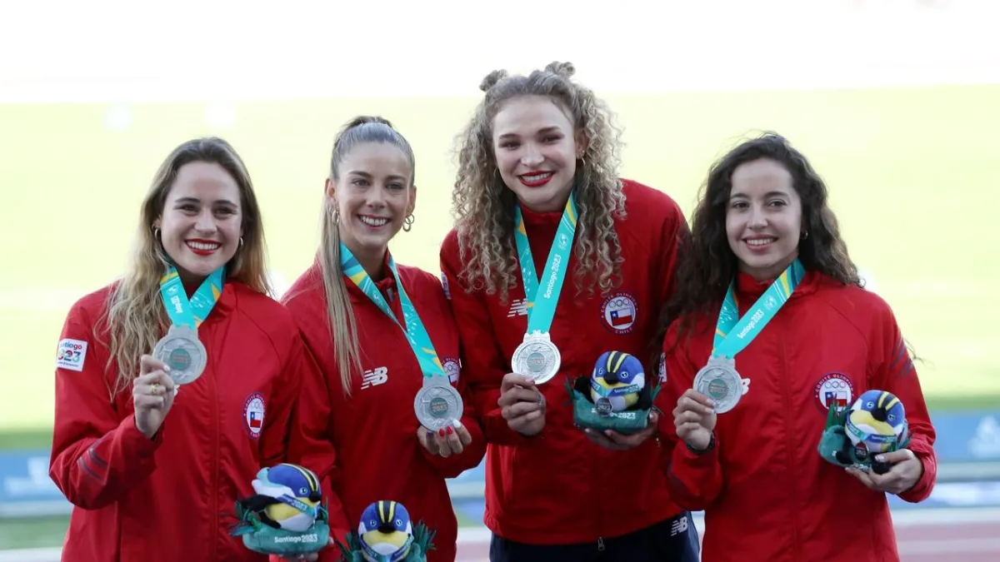
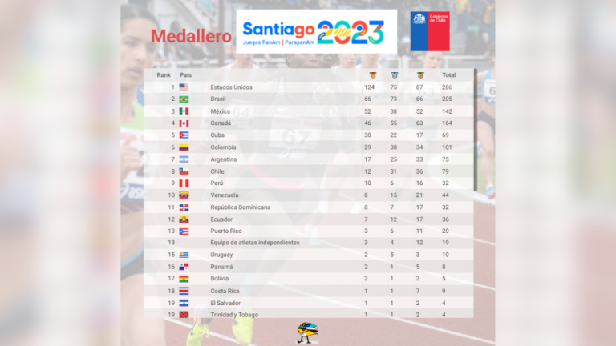
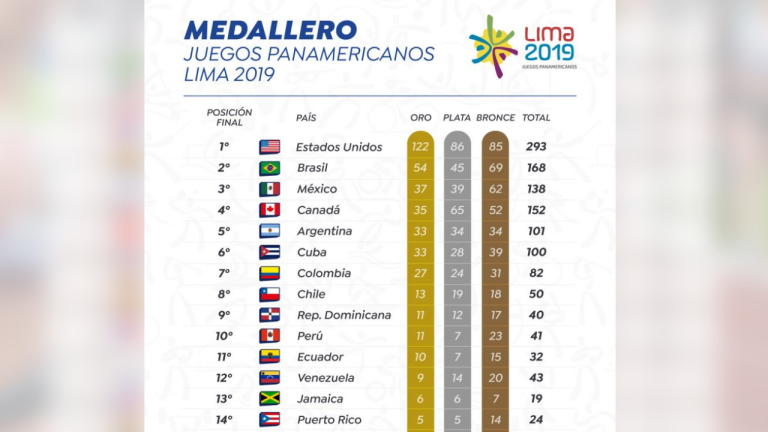

Al detalle: Las 79 medallas del Team Chile en su histórica participación en los Juegos Panamericanos de Santiago 2023
La representación nacional tuvo una participación histórica en casa y superó el total de preseas que se obtuvieron en Lima 2019, emocionando a todos los presentes en los diferentes recintos.

El deporte chileno tuvo una destacada participación en la principal cita a nivel continental, logrando preseas nada menos que en un total de 31 disciplinas distintas, igualando su posición en el medallero de Lima 2019 y obteniendo su mejor ubicación en el ránking del total de preseas desde 1955.
Total de medallas. Los Juegos Panamericanos Santiago 2023 finalizaron hoy con Chile obteniendo un total de 79 medallas, un récord absoluto en la historia de esta competencia para nuestro país.

Comparación con Lima 2019. Del total de medallas, 12 fueron de oro, 31 de plata y 36 de bronce. Con ello, Chile logró 29 medallas más que en los Panamericanos de Lima 2019 donde obtuvo 50 medallas: 13 de oro, 19 de plata y 18 de bronce. Es decir, ahora Chile logró una medalla de oro menos que en Perú, pero 12 más de plata y 18 más de bronce.

Octava y sexta ubicación. Considerando las medallas de oro, Chile logró, al igual que en Lima, el octavo lugar del medallero, pero logró saltar al sexto lugar considerando el total de medallas, superando en ese ránking a grandes potencias deportivas del continente como Argentina y Cuba.
Un logro impresionante teniendo en cuenta que, hace cuatro años, nuestro país consiguió 51 medallas menos que Argentina y 50 menos que Cuba. Este sexto lugar en el ránking de medallas totales es el mejor de Chile desde 1955, cuando ocupó el cuarto lugar. Si bien en Chicago 1959 terminó sexto en el ránking de oros, fue séptimo en el medallero total.
Medallas en 31 deportes distintos. Además, las medallas conseguidas en Lima 2019 fueron en 28 deportes distintos, mientras que en Santiago 2023 esta cifra subió a 31, otro récord absoluto para Chile.
En cuanto a repartición de medallas por género, 45 medallas fueron conseguidas por hombres (7 de oro, 19 de plata y 19 de bronce), 31 por mujeres (5 de oro, 1o de plata y 16 de bronce) y 3 (2 de plata y 1 de bronce) en disciplinas mixtas.
Deportes destacados. Los deportes que más destacaron fueron remo, atletismo y karate, que concentraron 9 de las 12 medallas de oro que consiguió Chile.
Los mejores en karate. En el caso del karate, Chile terminó en el primer lugar del medallero panamericano, mientras que en el remo y el patinaje de velocidad terminó en la segunda ubicación